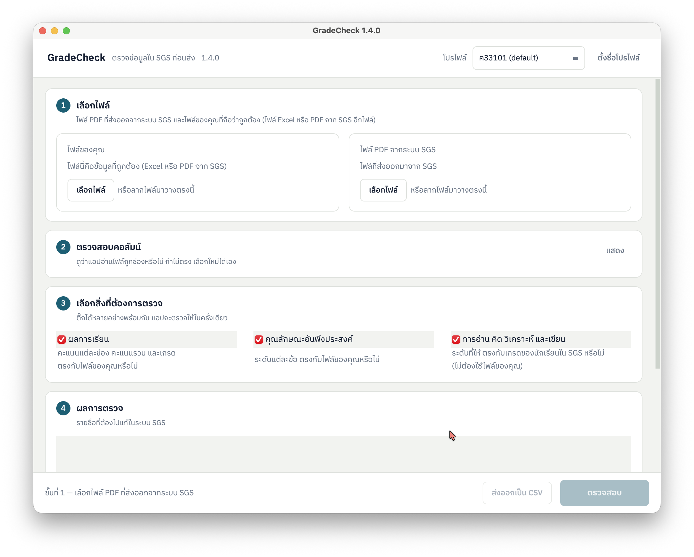

ตรวจทานคะแนนใน SGS ให้ตรงกับไฟล์ Excel ของคุณครู
GradeCheck เปรียบเทียบไฟล์คะแนน Excel ของคุณครูกับรายงานคะแนน PDF ที่ออกจากระบบ SGS ทีละช่อง ทีละคน เพื่อให้เจอจุดที่กรอกผิดตั้งแต่ก่อนคะแนนจะถูกประกาศเป็นทางการ
โปรแกรมนี้ใช้บนคอมพิวเตอร์ Windows หรือ Mac เปิดหน้านี้บนคอมพิวเตอร์ที่เก็บไฟล์คะแนน แล้วดาวน์โหลดจากตรงนั้น
ทำงานบนเครื่องของคุณครูแบบออฟไลน์ 100% · ข้อมูลนักเรียนไม่ถูกส่งออกไปที่ใดทั้งสิ้น · เวอร์ชั่นล่าสุด 1.4.0
ม.2/3 · คณิตศาสตร์พื้นฐาน · ภาคเรียนที่ 1
ตรวจแล้ว 42 คน · 11 ช่องคะแนนต่อคน · พบไม่ตรงกัน 3 รายการ
ตรวจได้ทั้งสามเรื่องในรายงานเดียว
ติ๊กเลือกได้หลายอย่างพร้อมกัน โปรแกรมตรวจให้ในครั้งเดียว
ผลการเรียน
คะแนนแต่ละช่อง คะแนนรวม และเกรด ตรงกับไฟล์ของคุณครูหรือไม่
คุณลักษณะอันพึงประสงค์
ระดับแต่ละข้อ ตรงกับไฟล์ของคุณครูหรือไม่
การอ่าน คิดวิเคราะห์ และเขียน
ระดับที่ให้ ตรงกับเกรดของนักเรียนใน SGS หรือไม่ ข้อนี้ใช้แค่ไฟล์ PDF จาก SGS ไม่ต้องใช้ไฟล์ของคุณครู
ไฟล์ PDF จาก SGS คือไฟล์แบบไหน
รายงานของวิชาที่ส่งออกจาก SGS เป็น PDF ทั้งห้อง ที่มีคะแนนแต่ละช่อง คะแนนรวม ร้อยละ เกรด คุณลักษณะข้อ 1–10 และการอ่านข้อ 1–5 ของนักเรียนทุกคน โปรแกรมอ่านตำแหน่งคอลัมน์จากไฟล์เอง ไม่ต้องตั้งค่า
ดูไฟล์ PDF ตัวอย่าง · ไฟล์ของคุณครูเป็น Excel หรือ PDF จาก SGS อีกไฟล์ก็ได้
คะแนนพิมพ์ผิดช่องเดียว แต่ตามแก้ทีหลังยากกว่ามาก
คุณครูหนึ่งคนต้องคีย์คะแนนหลายร้อยช่องเข้า SGS ภายในไม่กี่วัน การไล่สายตาเทียบเอกสารสองฉบับทีละบรรทัดใช้เวลานาน และยังพลาดได้อยู่ดี เมื่อคะแนนถูกประกาศไปแล้ว การแก้ไขต้องผ่านเอกสารและลายเซ็นอีกหลายชั้น
สลับตำแหน่งตัวเลข
พิมพ์ 17 เป็น 71 คะแนนยังดูสมเหตุสมผล จึงไม่มีอะไรสะดุดตาให้จับได้
ช่องที่ยังไม่ได้กรอก
นักเรียนที่มาสอบซ่อมหรือส่งงานย้อนหลัง มักถูกข้ามไปหนึ่งช่องโดยไม่มีใครสังเกต
คะแนนรวมที่ยังไม่ได้คำนวณใหม่
แก้คะแนนย่อยแล้วลืมรวมใหม่ ผลรวมในสองไฟล์จึงไม่ตรงกัน ทั้งที่คะแนนย่อยถูกต้องแล้ว
รายชื่อไม่ครบ
นักเรียนย้ายเข้า–ย้ายออกระหว่างภาคเรียน ทำให้มีชื่อในไฟล์หนึ่งแต่หายไปจากอีกไฟล์หนึ่ง
ตรวจแบบเดียวกับที่คุณครูตรวจเอง แต่ไม่พลาดสักช่อง
GradeCheck ไม่แก้ไขไฟล์ของคุณครู ไม่เขียนข้อมูลกลับเข้า SGS และไม่ตัดสินว่าฝั่งไหนถูก หน้าที่ของโปรแกรมคือชี้ให้เห็นทุกจุดที่สองไฟล์ไม่ตรงกัน แล้วปล่อยให้คุณครูเป็นคนตัดสินใจ
จับคู่นักเรียนด้วยเลขประจำตัว
ชื่อที่ดึงออกมาจากไฟล์ PDF มักมีสระหาย วรรณยุกต์เพี้ยน หรือขาดหายไปทั้งช่อง GradeCheck จึงยึดเลขประจำตัวนักเรียนเป็นหลักในการจับคู่ ไม่ใช้ชื่อ ผลการเทียบจึงไม่เพี้ยนตามการอ่านตัวอักษร
เทียบทุกช่องคะแนน ไม่ใช่แค่ผลรวม
ถ้าดูแค่คะแนนรวม ความผิดพลาดสองจุดอาจหักล้างกันจนผลรวมออกมาเท่ากันพอดี และซ่อนความผิดพลาดจริงเอาไว้ GradeCheck จึงเทียบทีละช่องคะแนนของนักเรียนแต่ละคน
บอกด้วยว่าน่าจะผิดแบบไหน
แยกแยะรูปแบบความผิดพลาดที่พบบ่อย ทั้งตัวเลขสลับตำแหน่ง ช่องที่ยังไม่ได้กรอก คะแนนรวมที่ยังไม่ได้คำนวณใหม่ และนักเรียนที่มีอยู่ในไฟล์เดียว เพื่อให้คุณครูรู้ว่าควรไปแก้ตรงไหนก่อน
ทำงานออฟไลน์ 100%
การประมวลผลทั้งหมดเกิดขึ้นบนเครื่องคอมพิวเตอร์ของคุณครู ไม่มีการอัปโหลดไฟล์ ไม่ต้องต่ออินเทอร์เน็ต และไม่มีบัญชีผู้ใช้ ข้อมูลนักเรียนจึงอยู่ในความดูแลของคุณครูตลอดเวลา
ส่งออกรายงาน CSV
บันทึกทุกรายการที่ไม่ตรงกันเป็นไฟล์ CSV เปิดต่อใน Excel ได้ทันที ใช้เป็นรายการสิ่งที่ต้องแก้ หรือแนบเป็นหลักฐานประกอบการขอแก้ไขคะแนนได้
รองรับทั้ง macOS และ Windows
เป็นโปรแกรมติดตั้งบนเครื่องตามปกติ ใช้ได้ทั้งเครื่อง Mac ส่วนตัวและเครื่อง Windows ของโรงเรียน หน้าตาและผลการตรวจเหมือนกันทั้งสองระบบ
สามขั้นตอน ใช้เวลาไม่ถึงหนึ่งนาทีต่อห้อง
ไม่ต้องตั้งค่าอะไรก่อนเริ่ม ไม่ต้องจัดรูปแบบไฟล์ใหม่ เปิดโปรแกรมแล้วเลือกไฟล์ได้เลย
เลือกไฟล์ทั้งสองฝั่ง
เลือกไฟล์ Excel ที่คุณครูใช้เก็บคะแนน และไฟล์ PDF รายงานคะแนนที่ออกจากระบบ SGS ของห้องนั้น
กดเปรียบเทียบ
โปรแกรมจับคู่นักเรียนด้วยเลขประจำตัว แล้วไล่เทียบคะแนนทีละช่องบนเครื่องของคุณครูเอง
ดูผลและส่งออก
อ่านรายการที่ไม่ตรงกันพร้อมค่าจากทั้งสองฝั่ง แก้ให้ถูกต้อง แล้วส่งออกเป็นไฟล์ CSV เก็บไว้เป็นหลักฐาน

ใช้งานฟรีทันที 3 ห้องเรียนแรก
ไม่ต้องชำระเงิน ไม่ต้องสมัครสมาชิก ไม่ต้องกรอกอีเมล ดาวน์โหลด ติดตั้ง แล้วตรวจห้องแรกได้เลยในวันนี้
macOS
ไฟล์ติดตั้งนามสกุล .dmg เปิดไฟล์แล้วลากโปรแกรมไปไว้ในโฟลเดอร์ Applications
ดาวน์โหลดสำหรับ macOSWindows
ไฟล์บีบอัดนามสกุล .zip แตกไฟล์แล้วเปิดโปรแกรมได้ทันที ไม่ต้องติดตั้งเพิ่ม
ดาวน์โหลดสำหรับ Windowsไฟล์ตัวอย่างสำหรับทดลอง
ไฟล์คู่หนึ่งที่จงใจใส่ข้อผิดพลาดไว้ 6 จุด ทั้งตัวเลขสลับตำแหน่ง ช่องที่ยังไม่ได้กรอก คะแนนรวมที่ไม่ได้คำนวณใหม่ และนักเรียนที่มีอยู่ในไฟล์เดียว ใช้ลองดูว่าโปรแกรมหาเจอไหม
ใช้คู่กับ SGS Auto-Typer กรอกคะแนนลง SGS ให้อัตโนมัติด้วย SGS Auto-Typer แล้วใช้ GradeCheck ตรวจซ้ำก่อนส่ง ใช้แยกกันก็ได้ ไม่ว่าจะกรอกด้วยมือหรือด้วยโปรแกรม
ดู SGS Auto-Typerครั้งแรกที่เปิดโปรแกรม ระบบปฏิบัติการอาจถามยืนยันเพราะเป็นโปรแกรมจากผู้พัฒนารายย่อย — บน macOS ให้คลิกขวาที่ไอคอนโปรแกรมแล้วเลือก “Open” ส่วนบน Windows ให้เลือก “More info” แล้วกด “Run anyway” หากติดขัดตรงจุดใด ทักมาถามได้เสมอ
ฟรี 3 ห้องเรียนแรก จากนั้นจ่ายครั้งเดียว 49 บาท
ไม่มีค่าบริการรายเดือน ไม่มีการต่ออายุ จ่ายครั้งเดียวแล้วใช้ได้ตลอดไป
ทดลองใช้ฟรี
3 ห้องเรียนแรกต่อหนึ่งเครื่อง นับรวมตลอดไป ไม่ใช่ต่อไฟล์ และไม่ใช่ต่อการเปิดใช้แต่ละครั้ง การเปิดไฟล์ชุดเดิมซ้ำจะเห็นห้องเรียนเดิมได้ฟรีเสมอ ไม่นับเพิ่ม มีเพียงห้องเรียนที่ไม่เคยเห็นมาก่อนเท่านั้นที่นับจากโควตา
ไลเซนส์เต็มรูปแบบ · 49 บาท
ปลดล็อกไม่จำกัดจำนวนห้องเรียน จ่ายครั้งเดียว ใช้ได้ตลอดไป รหัสไลเซนส์ตรวจสอบได้ในเครื่องโดยไม่ต้องต่ออินเทอร์เน็ต · ส่งรหัสทางอีเมลภายใน 1 วัน 49 บาท · รับรหัสทันทีหลังส่งสลิป 55 บาท
ซื้อไลเซนส์ชำระผ่าน PromptPay ที่หน้าซื้อไลเซนส์ เลือกรับรหัสทันทีหลังส่งสลิป (ระบบตรวจสลิปอัตโนมัติ) หรือให้ผู้พัฒนาตรวจสลิปแล้วส่งรหัสทางอีเมลภายใน 1 วัน ได้รหัสแล้ว ในโปรแกรมเลือกเมนู ช่วยเหลือ → กรอกรหัสปลดล็อก... วางรหัส แล้วกด “เปิดใช้งาน” · ยังไม่เห็นอีเมล? เช็กสถานะรหัสไลเซนส์
ก่อนเริ่มใช้
ไฟล์ PDF จาก SGS ต้องเป็นแบบไหน
เทียบ PDF จาก SGS สองไฟล์ได้ไหม
ต้องต่ออินเทอร์เน็ตไหม
โปรแกรมแก้ไฟล์ของฉัน หรือแก้ข้อมูลใน SGS ไหม
ฟรี 3 ห้องเรียน นับอย่างไร
จ่ายเงินแล้ว แต่ยังไม่ได้รหัส
มีคำถาม หรือไฟล์ที่โปรแกรมอ่านไม่ออก?
GradeCheck พัฒนาโดยตั้งใจให้ตอบโจทย์งานวัดผลจริงของคุณครู ทุกข้อเสนอแนะมีผลต่อรุ่นถัดไปเสมอ
- สอบถามการใช้งาน หรือขอความช่วยเหลือเรื่องการติดตั้ง
- ส่งรูปแบบไฟล์คะแนนที่โปรแกรมยังอ่านไม่ได้ เพื่อให้รองรับในรุ่นถัดไป
- สอบถามการใช้งานสำหรับทั้งกลุ่มสาระฯ หรือทั้งโรงเรียน